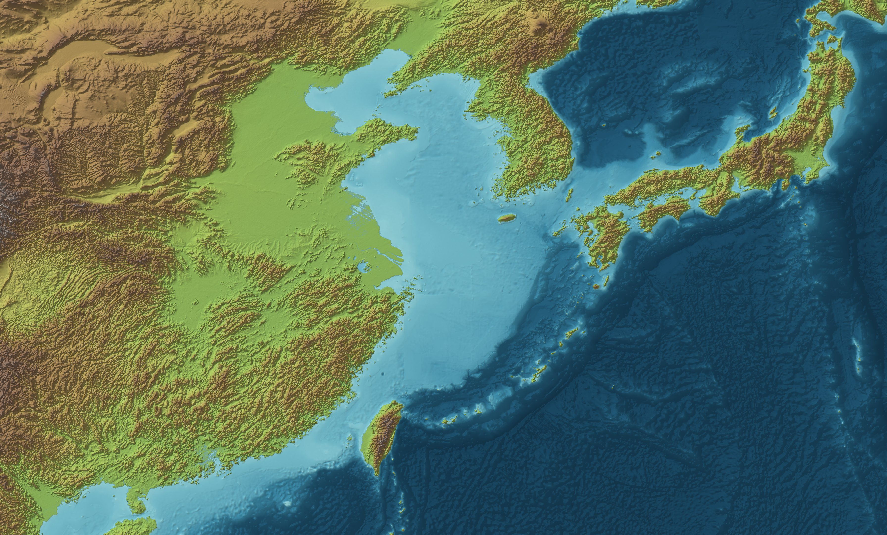
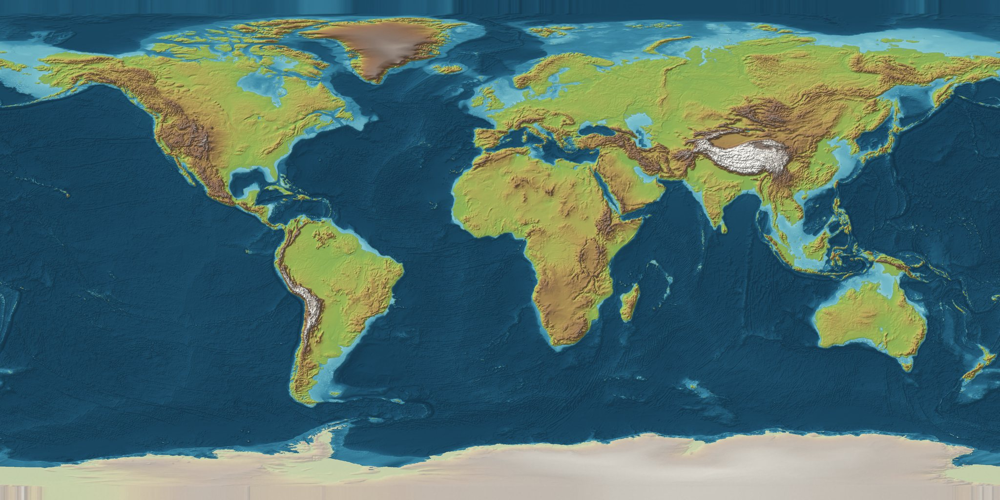

Two axes, one world
The globe explores sideways: pick a moment, see the whole world at it, dive. Chapters run downward: each is a curated thread through time, grouped by the culture whose sources tell it. Relationships are what connect the two, and the records already carry them.
Every number, name, window, place and link on these screens is from the 39 served chapters on main. The basemaps are painted from the elevation tiles already in the build cache. What is mocked is the interaction and the chrome, not the data.
The world at a moment
Drag the globe. Drag the playhead. The chapters alive at that year light up and the threads between them are drawn from the places they share. This replaces the card wall as the home page.
What is new here: the home page is the atlas, not a catalogue. The era strip is non-linear (everything before 2400 BCE is folded into the hatched band) so the early Americas and Lapita do not flatten the other 37. Marks are declutered by priority. The arcs are real: 91 chapter pairs share at least one place or people record today, without any new data work.
Chapters as vertical time
One column per culture, time running down the page, each chapter a bar at its window. Filter by region or by kind. Hover a bar to see the chapters it shares places with, across the columns.
This is the "chapters page" in Darwin's note of 10-23: valid, but on their own page and organised. A vertical timeline per culture is the shape; the same component later shows a place's or a person's timeline (see the last tab). Order is time, never file name.
A chapter as a guided tour
The embassy of 750–754, step by step. Each step flies the camera, moves the date, opens the card and holds. Play advances a step every few seconds. The ground is painted relief from the same elevation the globe already ships.


What is new here: play means story, not clock. The journal shows the step you are on and the one after it; the whole list is a disclosure. The qualifications (placement, dispute, precision) sit behind "Why this placement" rather than above the narrative. A ship or a party stands at the current stop. The diorama tier would replace this painted ground below region height, with the same chrome.
A place across chapters
The records already share one id for 88 places and 41 peoples across chapters. Nothing in the interface uses that yet. This is what a place page looks like when it does: one vertical timeline, every chapter's events at that place, in order.
This is the correlation Darwin asked for on 10-23, drawn from data that exists. The same page works for a people (the Persian Empire appears in three chapters, 秦 in four). The search result for 長安 lands here instead of on three unrelated copies.